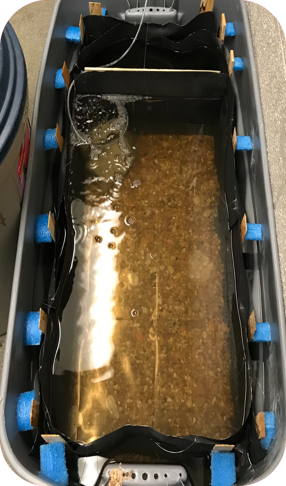
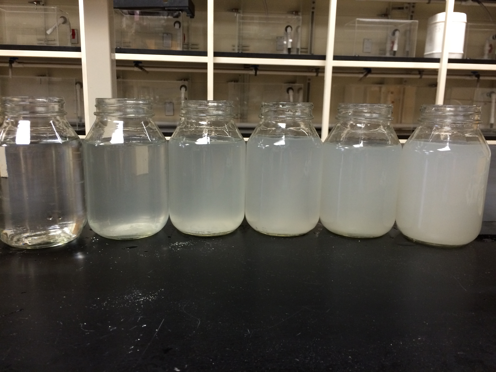

My Research
Master's Thesis Research -
Personality (consistent variation in behavioral traits) has been
identified in a wide range of taxa, including several cyprinid species3,4
.
Personality has been linked to important ecological characteristics, such
as dispersal and foraging activity1.
However, few studies have investigated personality-related dispersal into
intermittent habitat types or whether personality exists for native fauna that don't disperse over large distances, particularly in SE USA.
Examine whether personality exists in an important local minnow species,
the Creek Chub (Semotilus atromaculatus).
If consistent variation is discovered, characterize personality and
identify any personality syndromes.
Investigate whether an individual’s personality is related to its decision to colonize intermittent streams.
Collect individuals by seine from perennial and intermittent streams.
Acclimate, feed ad libitum, monitor for dropouts.
Assay for behavior: (1) Open-Field Test (pictured above): Boldness and Exploratory Tendencies, (2) Shoaling choice experiment: Sociability, and (3) Conspecific Aggression: Aggression.
Conduct a second round of assays 3 weeks later to measure personality
consistency.
Measure physical characteristics such as body mass and length, dissect to
determine sex.
A small number of fish collected from perennial streams have been assayed
once.
Our open-field arena was adapted from a previous study on mosquitofish and may need to be adapted further for the Creek Chub2.
Sampling will be conducted until approximately 70 individuals have been
tested, or clear differences have been detected.
High levels of turbidity, a measure of “cloudiness”, can have adverse
effects for species that rely on vision by increasing risk of mortality and
decreasing foraging success (Henley et al. 2000 and Lunt et al. 2014).
The California Killifish (Fundulus parvipinnis) and the Sailfin
Molly (Poecilia latipinna) are common residents of many California
estuaries, and are ecologically important as a trophic link between lower
level invertebrate prey and large predators (Talley et al. 2000).
Few studies have assessed how turbidity affects the escape
responses of fishes, and even fewer have studied species found in Southern
California (Feyrer et al. 2003).
Determine whether and how increased turbidity affects predator evasion
behavior of the California killifish and sailfin molly.
Collected individuals via seine from the San Diego River
and Mission Bay (San Diego, CA).
Established experimental aquariums at a particular
turbidity (0, 50, 100 or 150 NTU’s).
Acclimated fish for 1 hour.
Online video analysis software (Tracker) was used to analyze the video
reactions
Data was analyzed using a Kruskal-Wallis test.
At higher turbidities, both killifish and mollies exhibited lower
detection distances.
At higher turbidities, both killifish and mollies exhibited lower evasion
distances.
At higher turbidities, both killifish and mollies exhibited lower evasion
speeds.
Master's Thesis Research -
Austin Peay State University (2020
-)
Background:
Objectives:
Methods:
Preliminary Observations:
References:
- Biro, P. A., and J. A. Stamps. 2008. Are animal personality traits linked to life-history productivity? Trends in Ecology and Evolution 23:361–368.
- Cote, J., S. Fogarty, K. Weinersmith, T. Brodin, and A. Sih. 2010. Personality traits and dispersal tendency in the invasive mosquitofish (Gambusia affinis). Proceedings of the Royal Society B: Biological Sciences 277:1571–1579.
- Crane, A. L., M. C. O. Ferrari, I. A. E. Rivera-Hernández, and G. E. Brown. 2019. Microhabitat complexity influences fear aquisition in fathead minnows. Behavioral Ecology 31:261–266.
- Fu, S. J. 2020. The effect of personality measurement conditions on spontaneous swimming behavior in the pale chub Zacco platypus (Cyprinidae). Laboratory of Evolutionary Physiology and Behavior, Chongqing Key Laboratory of Animal Biology, Chongqing Normal University, Chongqing, China.
Summer Undergraduate Research Experience - University of San Diego (2016)
Background:
Objectives:
Methods:
Results:
Implications:
Increased turbidity significantly impacts the abilities of fish to detect predators. Therefore, anthropogenic contributions to turbidity are likely to significantly increase the mortality of fish, particularly juveniles. These results are increasingly relevant given the proposed and debated redevelopment of land bordering Mission Bay in San Diego.References:
- Feyrer, F. and Healey, M.P. (2003). Fish community structure and environmental correlates in the highly altered southern Sacramento-San Joaquin Delta. Environmental Biology of Fishes. 66: 123-132.
- Grecay, P.A. and Targett, T.E. (1996). Effects of turbidity, light level and prey concentration on feeding of juvenile weakfish Cynoscion regalis.Marine Ecology Progress Series. 131: 11-16 .
- Henley, W.F.; Patterson, M.A.; Neves, R.J. and Lemly, D.A. (2000). Effects of sedimentation and turbidity on lotic food webs: A concise review for natural resource managers. Reviews in Fisheries Science . 8.2:125-139.
- Lunt, J. and Smee, D. (2014). Turbidity influences trophic interactions in estuaries. Limnology and Oceanography. 6.59: 2002 -2012.
- Talley, D.M.; (2000). Ichthyofaunal utilization of newly-created versus natural salt marsh creeks in Mission Bay, CA. Wetlands Ecology and Management. 8.2: 117-132.